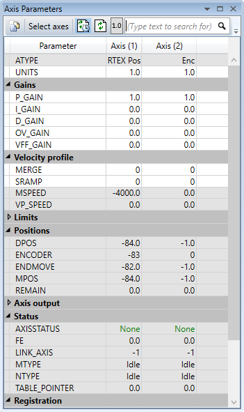
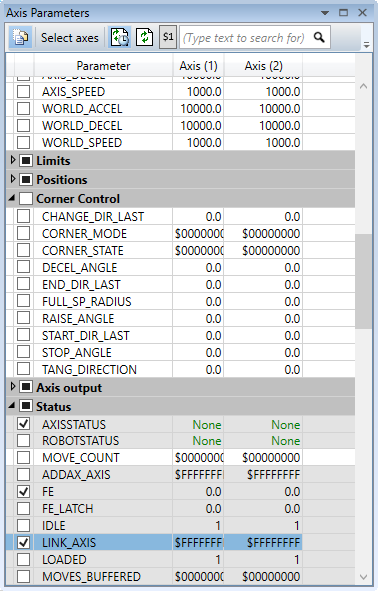
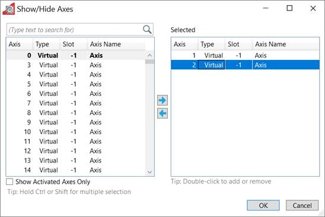

Axis Parameters

The Axis Parameters tool enables the user to monitor and
change the motion parameters for any axis on the controller. The display is
made up of collapsible groups of parameters. This is done to make locating a
parameter in the display easer and also allows the hiding of whole groups of
parameters so that only parameters of interest are visible. It is also possible
to individually show or hide individual parameters.
Parameters which can be edited have the normal edit box
background and those which are read-only have a greyed-out background.
Toolbar
|
|
|
|
|
Select filtered or "all parameters" view (See
"
views
" below)
|
|
Select Axes
|
Select which axes to display
|
|

|
Auto-refresh parameter values (toggle)
|
|
|
Refresh parameter values now
|
|
or

|
Select the integer number display format (decimal or
hexadecimal)
|
|

|
Search for text in parameter names.
|
There are two main views; filtered view which shows selected
parameters (see above) and all parameter view which allows the selection of
individual parameters for the filtered view. Normally the filtered view is
used. The view is selected by using the "all parameters" toggle
button
on the left of the window's toolbar.

The "all parameters" view has a check box next to
each parameter and group. If the box is checked then the corresponding
parameter or group is displayed in the filtered view, otherwise it is hidden.
Editing a Parameter Value
To enter a new value for a parameter:
-
select
its cell in the grid
-
type
a new value
-
press
"return" to enter the value or "Esc" to revert to the
previous value
To edit a parameter:
-
double
click on its cell in the grid
-
use
the cursor keys and number keys to change the value
-
press
"return" to enter the value or "Esc" to revert to the previous
value
Parameters with a grey background are read-only and their values
cannot be edited.
Pressing the “Select Axes” button causes the Axis Selection
dialog to be displayed.

Select all the axes to display and press the OK button.